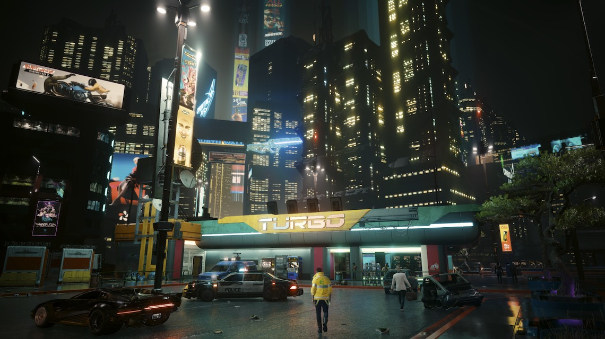
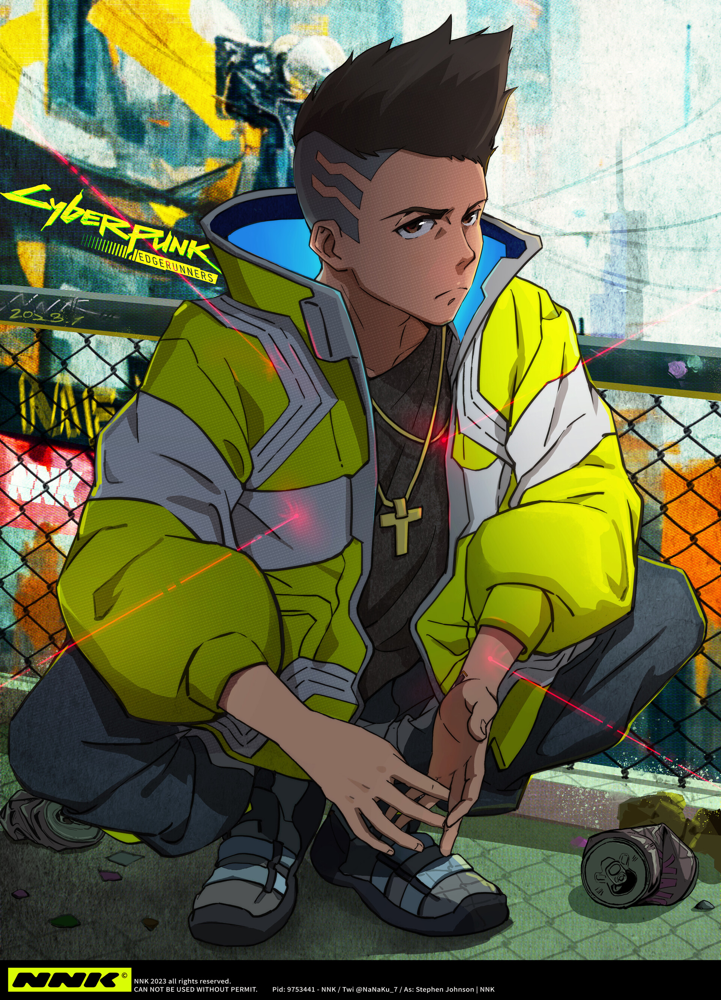
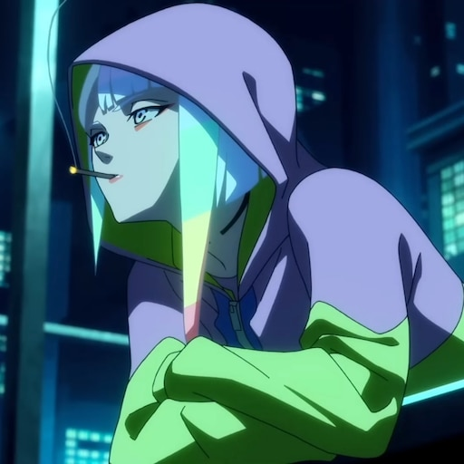
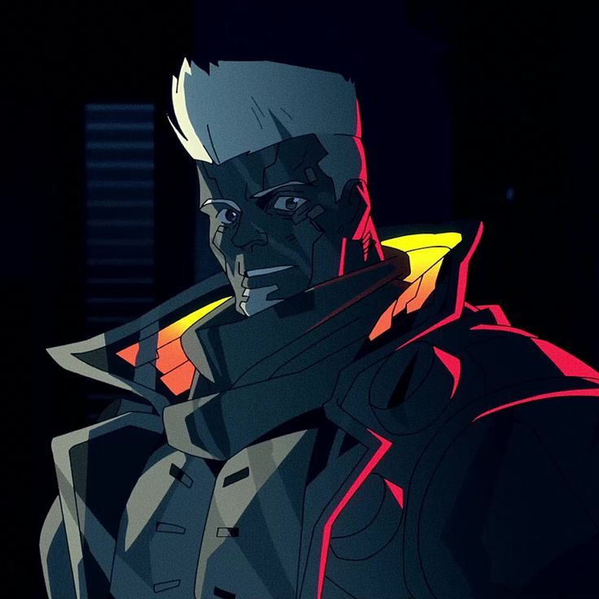

📖 Сюжет

Головний герой - Девід Мартінес, звичайний хлопець із бідного району, який після трагедії стає едж-раннером - найманцем поза законом.
- 10 епізодів
- стрімкий і емоційний сюжет
- несподівана кінцівка
Cyberpunk: Edgerunners - це аніме-серіал від студії Trigger, випущений у 2022 році на Netflix.
Серіал розгортається у тому ж всесвіті, що й гра Cyberpunk 2077 - у жорстокому Найт-Сіті, де виживання важливіше за мрії.

Головний герой - Девід Мартінес, звичайний хлопець із бідного району, який після трагедії стає едж-раннером - найманцем поза законом.

Головний герой. Вуличний хлопець, який мріє вибитись нагору у Найт-Сіті.

Нетраннер і кохана Девіда. Мріє втекти на Місяць подалі від міста.

Лідер команди едж-раннерів. Сильний, але балансує на межі кіберпсихозу.
Аніме вирізняється:
Cyberpunk: Edgerunners - це коротка, але потужна історія про мрії, любов і ціну, яку платить людина у безжалісному світі.
Серіал став одним із найкращих аніме 2022 року і повернув величезний інтерес до гри Cyberpunk 2077.